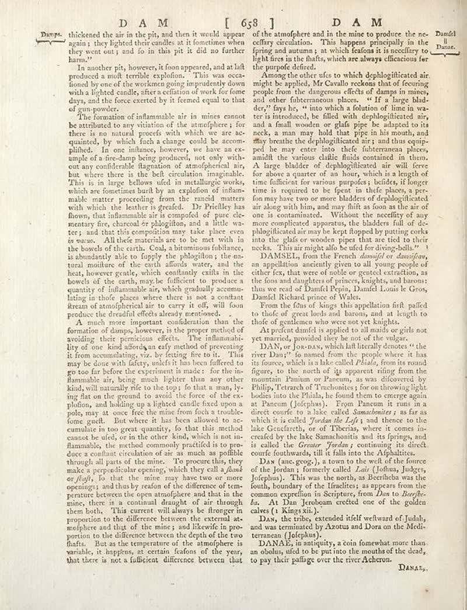

page-1214-17d180a99e0a.jpg

Page ID: britannica:309f765b1ecc83e0a7f7762e44b4a927a7555443:train:1214
Running head: DAM [ 658]
Image SHA-256: 17d180a99e0a48546a555d98cd7fdf15bb8f8ea4b751c50e02536eba79c2473a

(untitled) [?]
DAM Damps. thickened the air in the pit, and then it would appear again; they lighted their candles at it sometimes when they went out; and fo in this pit it did no further human? In another pits, however, it from apparently, and at half produced a multi terrible explolions. "This was oca- fioned by none of the workmen going independent down with a lighted candle, after a ceilation of work for form days, and the force exerted by it femen equal to that of gun powder. The formation of unintractable air in mines cannot be attributed to any variation of atmospheric or there is no natural process with which we are ac- quanted, by which fish a change could be accom- plished. In one influence, however, we have an ex- ample of a champ being produced, not only with- out any confidential flagation of atmospheric air, has where there is the belt circularism recognizable. This is in large bellows ufeid in metallurgie works, which are foretime birth by an explosion of infam- make matter processing from the mind matters with which the leather is greeded. Dr Priefley has flown, that inflammable air is comprised of pure ele- mentary fire charcoal or phologines and stable veter; and that this composition may take place even _in_ _wason._ All the materials are to be met with in the bowels of the earth. Coal, a bitumen imbalance, is abundantly able to supply the phogililon; the na- tural motions of the earth affords water, and the heat, between goods, which constantly calls in the bowels of the earth, may be sufficient to produce a quantity of fullammable air, which gradually occurring- falling in chois places where it is not a constant threat of atmospheric air to carry it off, will foam produce the desirable effects already mentioned. A much more important consideration than the formation of damps, however, is the proper method of avoiding their practical effects. The inflammation lies at one kind develops on eye methods of preventing it from accumulating, viz., by letting fire to it. This may be done with flying under it has been offered to get too far before the very moment is made: I’m the insan- hammable air, being much lighter than any other kind will naturally fit to the day so that a man, ly- ing flat on the ground to avoid the force of the ex- plofion, and holding up a lighted candle fixed upon a pole, you at once fee the mine from fetch a trouble- home goodt. But where it has been allowed to ac- cumulise in too great quantity, fo that this method causes be ufeid, or in the other kind, which is not in- flannable, the method commonly justified is to pro- duce a confluent circulation of air as much as possible through all parts of the mine. To procure this they make a perpendicular opening, which they call _haunk_ or _flaqls_, to that the mine may have two or more openings; and thus by realtion of the difference of em- perature between the open atmosphere and that in the mine, there is a constant danger of air through them both. This current will always be fronger in proportion to the difference between the external at- mendapre and that of the mine; and likewise in pro- portion to the difference between the depth of the two thafts. But as the temperature of the atmosphere is variable, it happens, at certain feafons of the year, that there is not a sufficient difference between that of the atmosphere and in the mine to produce the ne- ceffiny circulation. This happens principally in the firing and assembly, at which relation if necessary to fight iron in the fluids, which are always efficacious for the purpose defend. Among the other afes to which dephloglitated air, might be applied, Mr Cavallo reckona that of recurring people from the dangerous effects of dams in mines, and some fishermenous places. If a large blad- der;" fays he, " into which a foliation of lime in va- ter is introduced, be filled with dephlogilitated air, and in his wooden or glala pipe. He adapted to its deck, a man may hold that pipe in his mouth, and may breathe the ofphiglicated clay, and thus equip- pedel be may enter into the fubtermous places, until the various shade fluids contained in them. A large bladder of dephiglittered air will fever be above a quarter of an hour, which is a length of time follicles for various purposes besides, it longer time it required to be feet in these places, aper- do may have two or more bladder of dephiglitated air along with him, and may fihlit as foot as the air of use is contaminated. Without the receiptify of any more complicated approach, the diabetes full of de- phloglicitated air may be kept flopped by putting corks into the gills or wooden pipes that are tied to their necks. This is mainly allo to feed the diving balls."
Matched article: Gaelic Storm (album) (Wikipedia, revision 1294011027, re-rank score -5.5) · comparison
DAMSEL [Text]
DAMSEL, from the French _damself or demasifons_, an application ancestri given to all young people of eitherys, that were of endular or genest extraction, as the fons and daughters of princes, knights, and barons: thus we read of Daniel Prisin DaudiL Louis le Gros, David Richard spruce (My Wales. From the folos of Kings this appellation ftp piled to theife of great locals and barons, and a length to think of gestionome who were not yet lengths. At present damful is applied to all meals or girls not yet material, provided by be not of the vulgar.
DANX [Text]
DANX, er Jo now, which shall literally denotes “the river Dan?” to named from the people where it has its forces, which is also called Plulah, from its round figure, to the north of big apparent ting from the mountain Panman or Pancum, as was discovered by Philip, Tetrarch of Trecontenes, for on throwing light bodies into the Plulah, he found them to emerge at Pancum (Jofaphay) Eron Pancum it runs in a direct course to a lake called _Manandames_ is for as which is called _Yardan the Lafa_s and theme to the lake Cheretherly, of Tiberias, where it comes incrediely the lake Samanthouis and its fringes and is called the _Greater Yardan_ containing its check counts, forthwards, till it falls into the Alkalities. Dax (use grow), a term to the wet of the fource of the Jordan’s formerly called Leair (Jofhan, Judges, Jofaphus). This was the north, as Berichholz was the fourth, bounded of the patient, as appears from the common expection in Scripture, from Dar to Beefhe- ha. At Dan Jeradeam credited one of the golden calers (1 King size). Dax, the tribe, extended itself wellward of Judah, and was permitted by Azotus and Dora on the Medi- terminom (Jofaphay).
DANAE [Text]
DANAE, in antiquity, a coin famewhat more than an obolus, died to be put into the mouths of the dead, to pay their patige over the river Acheron. DANAS
Matched article: Charon's obol (Wikipedia, revision 1352505924, re-rank score -5.22265625) · comparison